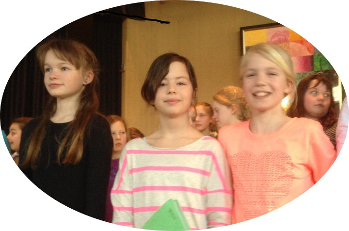

Musical
Oliver einfügen
Odysseus_2018
Coco_Superstar_2014 durchforsten und ergänzen: ENK WES
- vertonte Bildergalerie mit Fotos von Stephan Rieche =>
- zum Videoclip der Proben (3:30) =>
- Bericht in der LZ vom 21. März =>

Eine runde Sache
Nach vier Jahren - unvergessen: Löwenherz - wieder eine großformatige Musical-Aufführung
Von Hajo Gärtner (Text, Fotos, Videoclip)
Auf rund 400 Zuschauer schätzt der LZ-Berichterstatter das Publikum des Musicals ,,Coco Superstar'' an den beiden Aufführungsabenden. Die gelungene Inszenierung hat einmal mehr bewiesen, dass groß angelegte Musik-Projekte auch schon mit ganz jungen Grabbe-Musikern möglich sind. ,,Regelmäßig ausufernde Begeisterung'' registrierte der LZ-Rezensent bei den Auftritten von Aljana Arning in der Rolle des Hausmeisters. Auch die Auftritte in großer Formation ernteten kräftigen Applaus.
Die Handlung: Coco, der neueste Stern am Casting-Himmel, gibt ein Konzert in Detmold. Doch damit nicht genug: Ihr Manager verkündet, dass ein Vertreter des Grabbe-Gymnasiums, männlich oder weiblich, Coco Superstar backstage besuchen darf. Damit nimmt der Wahnsinn seinen Lauf: Wer hat es am ehesten verdient, Coco livehaftig zu treffen?
Für den Schulleiter ist selbstverständlich, dass der beste Schüler backstage zu Coco-Superstar darf. Aber wer ist der ,,beste''? Der mit den super Noten? Sagen Noten wirklich etwas über den Wert eines Schülers aus? Da gibt es doch noch so viele andere wichtige Aspeke: zum Beispiel Engagement, Sozialverhalten, Beliebtheit, Interesse an Musik. Auf der Suche dem ,,dem Richtigen'' liefern sich Naturwissenschaftler, Sportler, Sprachgenies und Künstler einen wortreichen Gesangs-Wettstreit. Der um Harmonie bemühte Lehrer versucht immer wieder zu vermitteln. Aber die Konfrontation ist unter den Kombattanten nicht aufzuhalten.
Musiklehrerin Stefanie Engelskirchen hat das Pop-Musical zusammen mit Anna Beisel und Stefanie Stahlberg konzipiert. Eine eigens aus den Grabbe-Ensembles zusammengestellte Band sorgte für den nötigen Groove, damit die mehr als 50 Sänger ihre Vokalpower voll entfalten können. Die Popmusik, die dabei herauskam, wirkte dynamisch, romantisch, tanzbar, frech, groovy, verträumt - also sehr vielseitig. Auftritte des Chores wechselten mit Solo-Passagen ab, Songs fügten sich dramatischen Spielszenen an.
Die COMBO bildete mit 12 jungen Musikern (Schlagzeug, E-Gitarre, Klavier, Saxophon und Co.) das instrumentale Kraftzentrum der Aufführung, unterfüttert von Fabian Wahren am E-Bass. Musiklehrer Florian Wessel hatte sechs Stücke arrangiert und eingeübt; dazu kamen Jingles für die Phasen zwischen den Szenen, die - wie erwartet - mit Applaus gefüllt waren. Die andere Hälfte der Begleitung wurde von musikalisch talentierten Schülern aus den Jahrgangsstufen 6 bis 11 geliefert (darunter Geige und Bratsche aus der Klasse 9m). Der Chor bestand aus mehr als 50 Vokalisten der Sekundarstufe I. Das Publikum bekam einen opulenten Sound geliefert, der die Neue Aula bis in die letzten Ränge hinein veritabel ausfüllte.
Trailer
Rock-Mystical 2010
Liebe und Verrat
Fetziger Tanz
Drei Schulen inszenieren Varus-Musical
Von Lisa Korte
Erstmalig in OWL inszenierten freie Künstler unter der Leitung von Melanie Blank gemeinsam mit motivierten Schülern ein Musical, das nicht nur jahrgangs-, sondern auch schulübergreifend ist. Beteiligt waren Schüler der Klasse 10m des Detmolder Grabbe-Gymnasiums sowie Schüler der fünften und sechsten Klassen der Realschule Luisenschule und der Brodhagen-Hauptschule aus Bielefeld. Das Besondere: Die Kinder und Jugendlichen stammen nicht nur aus Deutschland, sondern aus weiteren europäischen Ländern sowie China, den Philippinen, Sri Lanka und Asien. Seit August probten die begeisterter Musicaldarsteller für das Projekt - zunächst einzeln an ihren Schulen und später gemeinsam -, jedoch immer unter der Begleitung von professionellen Teamern, die Anregungen und Hilfe im Bereich Gesang, Text, Schauspiel, Regie und Technik gaben. Jeder Dienstagnachmittag wurde zu einem Erlebnis und einer historischen Zeitreise, bei der die Schüler selbst ihr Stück, ihre Rollen sowie Bühnenbild, Kostüme und Requisiten entwickeln konnten. "Wir haben mit dem Musical historische Personen belebt", erklärte Melanie Blank. Den jungen Schauspielern sah man die Lust am Spielen und Singen an, wenn sie mit strahlenden Augen ihre Figuren auf der Bühne repräsentierten. Sie bewiesen ihr Können und übertrugen ihre Freude auf das Publikum in der gut besetzten Aula des Grabbe-Gymnasiums. Die Geschichte des Musicals drehte sich um zwei Mädchen, die im Traum die verschiedenen Etappen rund um die Varusschlacht erleben. Ein Römerlager, ein Gesichtshelm als Liebesbeweis, ein Gastmahl im Zelt des römischen Statthalters Varus, die Varusschlacht, eine Brautentführung und die Vergiftung von Arminius bildeten die Geschichte. Zwischendurch gab es fetzige Tanzeinlagen und berührenden Musical-Gesang wie das Lied "Hol mich hier raus" zur Melodie von Irene Caras "What a feeling". Am Ende gab es minutenlangen Applaus für die Nachwuchstalente, die ihren gemeinsamen Erfolg glücklich feierten.
Trailer
|
|
Das Grabbe-Gymnasium Detmold, die Brodhagen-Hauptschule und die
Luisen-Realschule Bielefeld haben gemeinsam ein Musical zum Thema Varus
einstudiert. Natürlich die großen Themen: Krieg und Frieden, Liebe und
Verrat. Tanzeinlagen und Songs holen die alte Zeit in die Gegenwart.
Aufführung in Detmold am Samstag, 14. März, um 19 Uhr in der Alten Aula.
Hol_mich_raus
|
|
Das Grabbe-Gymnasium Detmold, die Brodhagen-Hauptschule und die
Luisen-Realschule Bielefeld haben gemeinsam ein Musical zum Thema Varus
einstudiert. Natürlich die großen Themen: Krieg und Frieden, Liebe und
Verrat. Tanzeinlagen und Songs holen die alte Zeit in die Gegenwart.
Aufführung in Detmold am Samstag, 14. März, um 19 Uhr in der Alten Aula.
Joseph
die Premiere
traumhafte Inszenierung eines traumhaften Musicals
- zur Bildergalerie (Fotos: Gärtner/Schweiger) =>
- zur Bildergalerie (Fotos: Stephan Rieche) =>
- Film (Gärtner/Hunger): Schlüsselszenen des Musicals =>
- Presse-Echo (LZ vom 21. März 2007) =>
Von Hajo Gärtner
Ich bin begeistert. Was für ein flacher Satz, verglichen mit dem Gipfelsturm der Akteure. Ein Gast aus Hamburg bringt die Bewertung am Ende der Aufführung besser ins Ziel: „Ey, das ist ja echt hammermäßig. Hier stecken Deutschlands Superstars. Meine Nackenhaare haben sich zwischendurch aufgestellt . . .“ Halt, Dieter, lass mal gut sein an dieser Stelle.
Die Joseph-Aufführung ist allererste Sahne; musikalisch, schauspielerisch, tänzerisch, ton- und lichttechnisch, vom animierten Bühnenbild her, Kostüme und Maske, rundum alles. Und sie hat bewegende Spitzen: Wenn Joseph seinen Kummer - was muss er auch mit der Ehefrau seines Herrn in die Kiste hüpfen? – am Gefängnisgitter der verdunkelten Bühne herausschmettert, dann sehen, hören, ja dann schmecken wir die Pein der gequälten Seele auf ihrem direkten Weg in die Hölle wie Blut auf der Zunge. Ein großartiger emotionaler Moment, in dem die Handlung richtig schön wuchtig breitgetreten wird, so dass auch das abgebrühteste Gemüt im Publikum sich durchgeschüttelt fühlt: Siehe, ein Mensch, dem Unrecht geschieht!
Dabei hat Josephs Leidensgeschichte schon viel früher begonnen: Die eigenen Brüder schaffen ihn aus Eifersucht aus dem Weg, weil er der Liebling des Vaters zu sein scheint. Dieser Anfang ist mit einer Prügelszene drastisch und treffend inszeniert. Joseph stürzt in einen tiefen Abgrund und erklettert dann Stein für Stein das Vertrauen des Gottkönigs. Der Pharao singt am Ende, den Joseph tüchtig herzend: „Wir sind ein tolles Team!“ Josephs unbekümmert pathetisch inszenierter Gipfelsturm zu Macht, Einfluss, Reichtum passt zum Anfang wie die Faust aufs Auge. Zwischendurch gibt’s herrliche Zwischenstationen wie den auf Elvis-Art rockenden Pharao und den dazu im arabian style getanzten Rock’n’Roll: barfuß, mit viel Bein und Hüftschwung, langem Hals, rollenden Augen und nach Entenart zuckenden Händen. Toll, toll, toll!
Bevor ich weiterschwärme, wende ich mich jetzt lieber der Produktion von Fotos und Filmen auf der Homepage zu. Bald erscheint eine objektive Beurteilung ja auch im Spiegel der Presse, der ich nicht vorgreifen will und die selbstverständlich auch an dieser Stelle gezeigt wird. Vier kleine Anmerkungen zum Abschluss:
- Den Dieter Bohlen im Publikum habe ich erfunden, weil ich nicht so unter- und überirdisch formulieren kann wie er. Muss ich noch üben.
- Das animierte Bühnenbild – Flashfilm im comic style – gefällt mir „hammermäßig gut“, weil dadurch eine Metaebene entsteht, auf der theatralische und pathetische Pointierungen – emotional wuchtig, aber auch schnell überdreht wirkend! – selbstironisch abgefangen werden. Das ist Kunst, Leute. Ihr habt das Wesentliche kapiert.
- Wer nicht hingeht und guckt, hat wirklich was verpasst.
Videoclip
Interview nach der Premiere
15-minütiger Beifall für
Maxi Weiß und seine Mitstreiter
von Marco Schweiger (Grabbe Online)
Die Premiere des Musicals Joseph, aufgeführt unter der Regie von Maxi Weiß, kam offensichtlich sehr gut an beim Publikum. Deshalb wollten die Zuschauer nach der Schlussszene die Aula nicht verlassen, sondern applaudierten, was das Zeug hielt. Sie pfiffen, trampelten und brachten den Darstellern stehende Ovationen. So mussten die Sänger noch mal ran und ihre Stimmbänder bis an die Grenze ausreizen. Entsprechend stolz sind die drei Organisatoren Maxi Weiß, Benedikt Brenk und Philipp Böing nach der gelungenen Premiere. Man sah ihnen bei ihrer Ehrung am Ende der Vorstellung aber auch die Erleichterung darüber an, dass alles glatt gelaufen ist. Die Fotos der Bildergalerie sprechen Bände, die Videoclips werden noch aussagekräftiger sein.
GO: Hallo Maxi, nach dieser gelungenen Premiere, bist du da stolz auf dich und deine Truppe?
Maxi: Ja klar, nach so viel Arbeit und Vorbereitung ist man natürlich irgendwie stolz. Aber ich bin vor allem stolz, dass wir es trotz anfänglicher Probleme bis zum Ende durchgezogen haben.
GO: Könntest du dir nach der heutigen Premiere vorstellen, noch einmal so ein Musical zu planen und zu organisieren?
Maxi: Vorstellen könnte ich mir das und die Lust wäre auch da, aber jetzt ist es so weit, dass wir, die drei Organisatoren, bald etwas ernster zu nehmende Klausuren zu schreiben haben. Es hat uns trotzdem sehr viel Spaß gemacht!
GO: Herr Mönks hat ja in seiner Rede von zahlreichen Schwierigkeiten und Zwischenfällen in der frühen Anfangsphase gesprochen. Die hätten wohl auch dazu geführt, dass die Idee, ein solches Musical zu inszenieren, das eine oder andere Mal verworfen wurde. Wer gab euch in einem solchen Fall neue Anstöße?
Maxi: Das waren eigentlich immer wir selber. Irgendwie war es doch zu schade, die ganzen Texte umsonst gelernt und alles einstudiert zu haben. Außerdem war da der Gedanke an einen Tag wie diesen heute, an dem man das, was man mit viel Mühe und Arbeit zustande gebracht hat, vor einem Publikum zeigen darf. Das ist eigentlich immer ein Ansporn gewesen.
GO: Vielen Dank Maxi und noch viel Erfolg und Spaß bei den folgenden beiden Aufführungen!
Maxi: Danke!
Vorgeschichte und Programm
Von der Entstehung eines Musicals
von Maximilian Weiß
Aufführungen am Dienstag, Mittwoch, Donnerstag,
20./21./22. März, um 19.30 Uhr in der Neuen Aula
Rufe schallen durch die samstägliche Stille der Neuen Aula. Die 3m hohe Leiter wackelt bedenklich unter der Kraft des auf ihr herumturnenden Schülers. "Wir müssen noch ein gutes Stück nach links, ich kann den Haken so nicht erreichen", teilt Marcel Rose aus der Stufe 11 gerade lautstark den Kumpanen zu seinen Füßen mit. Also heißt es, den langen Abstieg auf dünnen Sprossen gefahrlos hinter sich zu bringen und die Leiter an die passende Position zu hieven. Marcel wischt sich den Schweiß von der Stirn. Die Uhr zeigt auf 8.30, abends. Heute noch soll das Bühnenbild für das Musical Joseph fertiggestellt werden.
Pläne für die Durchführung dieses Projekts, für das viele sowohl künstlerisch und musikalisch als auch handwerklich begabte Leute momentan ihre Zeit opfern, gab es schon vor knapp zwei Jahren. Damals hatte der Musiklehrer Herr Mönks, der bereits vor mehr als 13 Jahren mit dem Stoff Aufführungspraxis sammelte, den Anstoß gegeben. Doch in der langen Zeit geriet die gute Idee in einen Treibsand aus Terminverschiebungen und Lehrer-Fortgängen und drohte schließlich endgültig zu versinken - bis sich kurz vor den Winterferien ein paar über die Jahre treue Mitglieder des spärlich besetzten Ensembles zusammenrauften und entschieden, die Organisation der Theaterproduktion selbst in die Hand zu nehmen ( - was die Mithilfe von Lehrkräften des Grabbes, die etwa in Form von Frau Sentker sehr engagiert und vertrauensvoll stattfand, deswegen noch lange nicht ausschloss).
Dass das Musical aus der Feder Andrew Lloyd Webbers, ein Star dieses Genres, genug Potenzial mit sich bringen würde, um die Zuschauer begeistern zu können, stand dabei wohl außer Frage - der stets schwungvolle Mix aus bekannten Musikstilen wie Rock'n'Roll oder französischem Chanson lässt nie Langeweile aufkommen, und die bekannte Bibelgeschichte ist mit viel Witz und Dramatik aufbereitet. Doch was den unerfahrenen Schülern Sorgen bereitete, war der Organisationsaufwand, den sie nur erahnen konnten: "Natürlich wussten wir, dass einiges an Arbeit auf uns zukommt", berichtet etwa Benedikt Brenk, der als Chef-Organisator die Fäden in der Hand hält. "Doch auch wenn wir zu Beginn versuchten, alles Wichtige zu beachten, regelt sich das meiste doch erst in den letzten Wochen." Da schaltet sich Philipp Böing, der mit Joseph die Titelfigur höchstselbst verkörpern wird, ein: "Aber mal ehrlich: Welches große Projekt hat denn wohl keine spannende Endphase? Wichtig ist doch, dass es letztlich klappt." Und dafür stehen die Zeichen, sollte der restliche Zeitplan eingehalten werden, gar nicht schlecht: musikalisch stünden die Szenen sowieso, in den nächsten Tagen gelte es nun, das Zusammenspiel zwischen dem Ensemble, der Band, dem Licht und der Tonregie zu verfeinern. Auch die Kostüme wären noch nicht alle fertig genäht, aber, so Benedikt, "das wird am leichtesten zu integrieren sein". Und Philipp verspricht andeutungsweise sogar noch ein paar technische Spielereien, die für die ein oder andere Überraschung beim Publikum sorgen sollen - "Sowas hätte es vor 13 Jahren sicher nicht gegeben".
Und das Bühnenbild? Die jugendlichen Handwerker um Marcel haben inzwischen auch die Seitenwände aufgestellt und somit ihr Werk eigentlich getan. Dennoch fährt das Sägeblatt ein vielleicht letztes Mal mit ruhiger Hand geführt durch eine Holzlatte und trennt ein maßgerechtes Stück davon ab. Es soll als zusätzlicher Stützbalken die Aufhängung der blauen Tücher absichern. Keine schlechte Idee - schließlich sollten unliebsame Überraschungen während der Vorstellung besser vermieden werden.
Presse-Echo
Detmold (kpa). Einen explosionsartigen Applaus und standing ovations bekamen am Dienstagabend die Mitwirkenden des Musicals "Joseph". In der voll besetzten Aula des Grabbe-Gymnasiums präsentierten Schüler und Schülerinnen bei der Premiere des Stücks ihr gesangliches und schauspielerisches Talent.
Sand, Palmen und die sengende Sonne - so sah das schlichte, aber wohl abgestimmte Bühnenbild aus, welches die Gymnasiasten für ihren Auftritt auf der Bühne geschaffen hatten. So unauffällig die Spielfläche auch war, die Darsteller überzeugten mit ihrer Stimmgewalt und hervorragender Mimik und Gestik jeden Besucher. Auch das Orchester, welches die verschiedenen Stile - von Jazz-Einlagen, über den 20er-Jahre-Musik bis hin zu Rock'n'Roll - zu einer musikalischen Einheit verschmolz, bot eine großartige Show.
Damit haben die Schülerinnen und Schüler des Grabbe- Gymnasiums das Musical "Joseph and the Amazing Technicolor Dreamcoat" von Andrew Lloyd Weber brillant umgesetzt. Im Mittelpunkt der biblischen Geschichte steht Joseph, der von seinen elf Brüdern aus Neid an eine Karawane verkauft wird. Als Traumdeuter macht sich Joseph in Ägypten einen Namen und darf die Träume des Pharao deuten, was ihm Ruhm und Ehre bringt. Thema der Story ist Schuld und Vergebung, welche die Brüder am Ende erfahren, sodass einer Familienzusammenführung nichts mehr im Wege steht.
Am Tag der Premiere von "Joseph" hätte keiner der Besucher gedacht, dass es beinahe nicht zu der Aufführung gekommen wäre. Denn vor einigen Monaten sah es noch danach aus, als würde das Projekt an Zeitmangel scheitern. Bevor es aber so weit kam, nahmen drei Schüler das musikalische Vorhaben in die Hand und übernahmen die gesamte Organisation. Maximilian Weiß, Benedikt Brenk und Philipp Böing kümmerten sich seit Januar um alle Belange rund ums Musical - von der Einrichtung der Aula bis zur Regie.
Zeit investiert
Insgesamt rund 100 Schüler der Jahrgangsstufen 7 bis 13 haben an dem Stück gearbeitet und neben den schulischen Aufgaben viel Zeit und Energie in das musikalische Projekt investiert. "Manche Eltern sind in der Vorstellung, um endlich ihre Kinder zu sehen", scherzte deshalb Musiklehrer Udo Mönks, der den Schülern das Musical vorgestellt und die musikalische Leitung übernommen hatte. Bei den Schülern habe die packende Musik gezündet, so Mönks, der sich "hellauf begeistert" zeigte, die "tief greifende Idee herausgearbeitet" zu sehen. Die Zuschauer waren derselben Meinung und ließen den Beifall nach 90 spannenden Minuten nicht verhallen, sodass "Pharao" Jan Schönrock Mikrofonständer schwingend und "Joseph" alias Philipp Böing samt bunt besticktem Umhang eine Zugabe boten.
Kommentar
Der steinige Weg zum Erfolg
Von David Strauch und Oliver Stegemeier
Die Unternehmung ,,Joseph" stand zunächst unter keinem guten Stern. Vorbereitungen und Proben zogen sich in die Länge, die Projektleitung wechselte mehrfach und eine Aufführung erschien plötzlich als unrealisierbar.
Bis Maximilian Weiß, Benedikt Brenk und Philipp Böing das Ruder in die Hand nahmen und die Proben vorantrieben. Mit dem Argument: Wenn wir jetzt aufstecken, dann haben wir Texte vergeblich auswendig gelernt und sinnlos monatelange Vorbereitungen auf uns genommen. Diese drei Schüler der Jahrgangsstufe 11 reorganisierten das komatöse Projekt fast im Alleingang. Sie engagierten erstaunlich viele Schüler und Bekannte für Haupt- und Nebenrollen und bewerkstelligten einen reibungslosen Ablauf innerhalb der sehr heterogenen Gruppe, die auf und hinter der Bühne tätig war.
Nun halfen auch Lehrer bei der Beschaffung der Requisiten und Organisation der musikalischen Begleitung mit und griffen dem Team immer stärker unter die Arme.
Die neue Projektleitung dachte an alles: die nötige Werbung, passende Kostüme, überzeugende Schauspieler, gute Sänger, engagierte Helfer, ein fähiges „Orchester“ und das starke Gefühl, das die Zuschauer bei den Aufführungen mitten ins Herz traf. Das Produkt geriet am Ende trotz aller Strapazen - oder vielleicht eben deswegen - grandios.
Die Zuschauer der Premierenvorstellung brachten den Darstellern am Ende der Aufführung „standing ovations“ entgegen und kamen am folgenden Tag aus dem Schwärmen nicht mehr heraus, so dass die Publikumsresonanz in den folgenden zwei Vorstellungen noch weiter wuchs und die Schulaula in der Abschlussvorstellung restlos ,,ausverkauft" war. Kein Sitzplatz mehr zu haben.
Schauspielerisch unglaublich präsent und gesanglich perfekt agierte Hauptdarsteller Philipp Böing und rackerte wie eine Lokomotive, die alle Waggons mitreißt und der Aufführung den großen Bahnhof verschafft. Auch alle anderen Darsteller waren bemüht, eine hervorragende Leistung abzuliefern, und taten dies mit Bravour. Am Ende jeder Vorstellung gab es niemanden im Raum, der nicht begeistert war. Alle trampelten und klatschten und freuten sich über die erfolgreiche Umsetzung dieses Mammutprojekts, das zu Recht sogar von der Tageszeitung gelobt und mit einem großformatigen Artikel honoriert wurde.
Im schulinternen Homepage-Forum wird die Aufführung inzwischen als musikalische Unternehmung mit Beispielcharakter gewertet. Wen wundert's da noch, dass im Gästebuch auch die erste Liebeserklärung an die Akteure formuliert worden ist? Schließlich haben sie sich in unsere Herzen gesungen.

{kind=link}